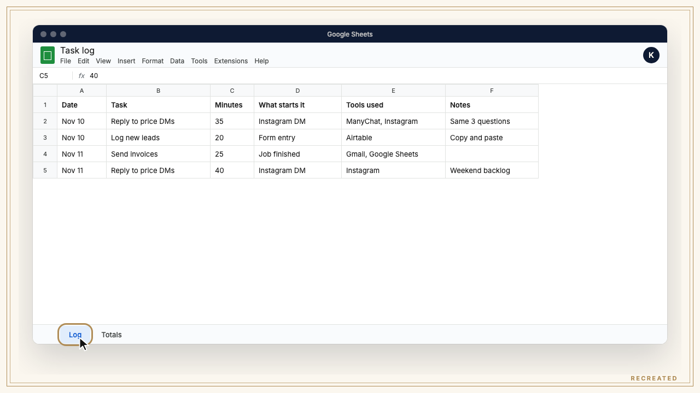
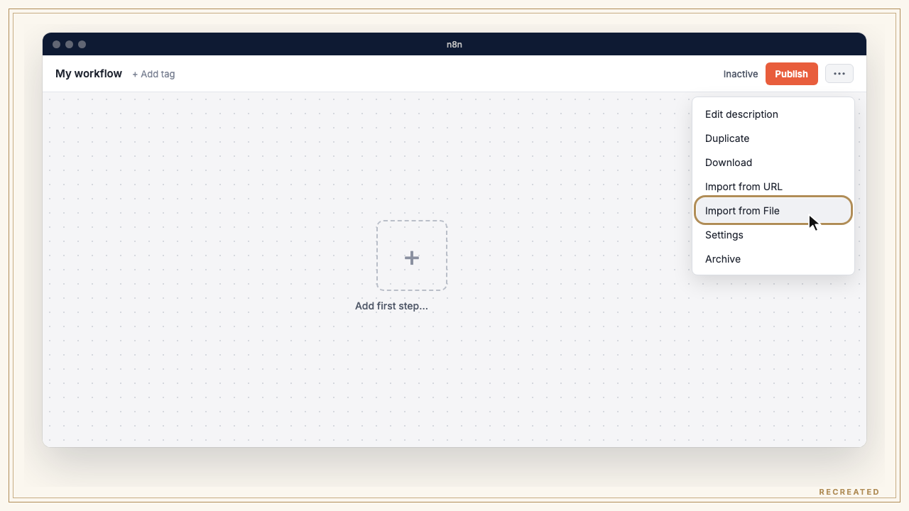

Don't automate your business. Automate one job. Log your repeat tasks for a week, pick the biggest total, and run it through the 6 steps in this guide.لا تُؤتمِت عملك كله. أتمِت مهمة واحدة. سجّل مهامك المتكررة لمدة أسبوع، واختر صاحبة أكبر مجموع، ثم مرّرها على الخطوات الست في هذا الدليل.
Tab "Log": Date | Task | Minutes | What starts it | Tools used | Notes Tab "Totals": Task | Times this week | Total minutes B2: =COUNTIF(Log!B:B, A2)
Set up the one-week task log in Google Sheets, find the job that eats the most minutes, write it out, have Claude Code build it, put it on an N8N trigger, test it 10 times and measure what you got back.جهّز سجل المهام لأسبوع واحد في Google Sheets، واعثر على المهمة التي تستهلك أكثر الدقائق، واكتبها خطوة بخطوة، ودع Claude Code يبنيها، واربطها بمُشغّل في N8N، واختبرها 10 مرات، ثم قِس الوقت الذي استعدته.
People try to automate everything and finish nothing. One job, done properly, teaches you the whole method: find it, break it down, build it, make it run alone, test it, measure it. Then pick the next one. One job a month is 12 jobs a year off your plate.يحاول الناس أتمتة كل شيء فلا ينهون شيئًا. مهمة واحدة تُنجز كما يجب تعلّمك الطريقة كلها: اعثر عليها، فكّكها، ابنها، اجعلها تعمل وحدها، اختبرها، قِسها. ثم اختر المهمة التالية. مهمة واحدة كل شهر تعني 12 مهمة في السنة تُرفع عن كاهلك.
Here's what a finished one looks like, the missed-DM job: someone comments a keyword, ManyChat sends them the guide, N8N adds the lead to Airtable and GoHighLevel, and Gmail sends the follow-up 2 days later. Nobody presses start. Your first job doesn't have to be this one. The log decides.هكذا تبدو مهمة مكتملة، مهمة الرسائل الفائتة: يكتب أحدهم كلمة مفتاحية في التعليقات، فيرسل له ManyChat الدليل، ويضيف N8N العميل المحتمل إلى Airtable وGoHighLevel، ثم يرسل Gmail رسالة المتابعة بعد يومين. لا أحد يضغط زر البدء. ليس شرطًا أن تكون مهمتك الأولى هي هذه. السجل هو الذي يقرر.
Make a Google Sheet with a tab called Log and these columns. For one week, add a row every time you do a repeat task, with the minutes it took. Then make a second tab called Totals, list each task once in column A and total its minutes with the formula. The biggest total wins, not the task you hate most.أنشئ جدول Google Sheets فيه تبويب اسمه Log وهذه الأعمدة. لمدة أسبوع، أضف صفًا في كل مرة تنفّذ فيها مهمة متكررة مع الدقائق التي استغرقتها. ثم أنشئ تبويبًا ثانيًا اسمه Totals، واكتب كل مهمة مرة واحدة في العمود A، واجمع دقائقها بالمعادلة. الفائزة صاحبة أكبر مجموع، وليست المهمة التي تكرهها أكثر.
Tab "Log": Date | Task | Minutes | What starts it | Tools used | Notes Tab "Totals": Task | Times this week | Total minutes B2: =COUNTIF(Log!B:B, A2) C2: =SUMIF(Log!B:B, A2, Log!C:C)

Write the job like you're training someone new. Fill in this template for the winning task. If you can't write it, AI can't do it.اكتب المهمة كأنك تدرّب موظفًا جديدًا. املأ هذا القالب للمهمة الفائزة. إن لم تستطع كتابتها، فلن يستطيع الذكاء الاصطناعي تنفيذها.
Job: [name] What comes in: [the email, form, DM or file that starts it] What I check: [every decision, in order] What goes out: [the reply, record or file at the end] Tools: [Gmail, Airtable, GoHighLevel...] A human steps in when: [money, complaints, anything unsure]
Open Claude Code in an empty folder and paste prompt 2 from the prompts pages with your filled-in template. Ask it to build the flow as an N8N workflow file and to explain each part back to you. If you can't follow the explanation, ask again until you can. You'll be the one fixing it.افتح Claude Code في مجلد فارغ والصق الأمر 2 من صفحات الأوامر مع القالب بعد ملئه. اطلب منه أن يبني المسار كملف workflow لـ N8N وأن يشرح لك كل جزء. إن لم تفهم الشرح، اطلبه مرة أخرى حتى تفهم. أنت من سيصلحه لاحقًا.
In N8N, import the file (Import from File in the workflow menu), connect your credentials on each node, and set the trigger: an n8n Form Trigger for a new form, a Webhook for a new DM from ManyChat, or a Schedule Trigger for every Monday at 9. Then hit Publish (older versions call it Active). If you have to press start, it isn't automated yet.في N8N استورد الملف (Import from File من قائمة الـ workflow)، واربط بيانات الدخول في كل عقدة، واضبط المُشغّل: n8n Form Trigger لنموذج جديد، أو Webhook لرسالة جديدة من ManyChat، أو Schedule Trigger لكل يوم اثنين الساعة 9. ثم اضغط Publish (الإصدارات الأقدم تسميه Active). إن كان عليك أن تضغط زر البدء، فهي ليست مؤتمتة بعد.

Run it on 10 real cases before any customer sees it. Log every run in a third tab. Every wrong output gets a row, and you fix the step that caused it, then run that case again.شغّلها على 10 حالات حقيقية قبل أن يراها أي عميل. سجّل كل تشغيل في تبويب ثالث. كل نتيجة خاطئة تأخذ صفًا، وتصلح الخطوة التي سببتها، ثم تعيد تشغيل الحالة نفسها.
Tab "Tests": Case | Input | What should happen | What happened | Step to fix | Fixed?
One week after it goes live, log the same way as step 1. Write the before and after minutes on one line. The minutes you got back are the only number that matters, and that line decides your next job: back to step 1 with the next biggest total.بعد أسبوع من التشغيل الفعلي، سجّل بالطريقة نفسها كما في الخطوة 1. اكتب دقائق قبل وبعد في سطر واحد. الدقائق التي استعدتها هي الرقم الوحيد المهم، وهذا السطر يحدد مهمتك التالية: عُد إلى الخطوة 1 مع صاحبة ثاني أكبر مجموع.
Job | Minutes per week before | Minutes per week after | Minutes saved
انسخ الأوامر والنصوص كما هي باللغة الإنجليزية، فهي تعمل بدقة أكبر.
Here's my task log for one week, exported from Google Sheets: [paste the Log tab, or attach the CSV] Group tasks that are the same job under one name. Total the minutes per job and rank them, biggest first. For the top 3, tell me what starts each one and which tools it touches.
I want to automate one job in my business. Here it is, step by step: [paste your filled-in template from step 2] Build it as an N8N workflow I can import, saved as [job-name].json. Use the [trigger] trigger and these tools: [Gmail, Airtable, GoHighLevel]. Anything that involves money or a complaint goes to me, not the customer. Then explain each node back to me in plain words, and list the credentials I need to connect.
My N8N workflow [job-name].json gave the wrong output. Input: [paste the input] What it did: [paste the output] What it should have done: [one line] Find the node that caused it, fix it, and tell me what you changed.
Here's my task log from the week before the automation and the week after: [paste both logs] For the job [job name], give me minutes per week before, after, and saved. Then rank what's left in the log so I know my next job.
Start the log tomorrow morning. By next week you'll know your first job, and it's rarely the one you guessed.جرّبه هذا الأسبوع على عمل حقيقي، ثم أخبرني بالنتيجة عبر رسالة على إنستغرام، فأنا أقرأ الرسائل بنفسي.
AI operator and educator. I build AI systems for business owners: content, ads and automation, with Claude Code at the center. If you want it built for you, DM me.مشغّل ومعلّم في مجال الذكاء الاصطناعي. أبني أنظمة ذكاء اصطناعي لأصحاب الأعمال في المحتوى والإعلانات والأتمتة، ويكون Claude Code في قلبها. إذا أردت أن أبنيها لك، راسلني.